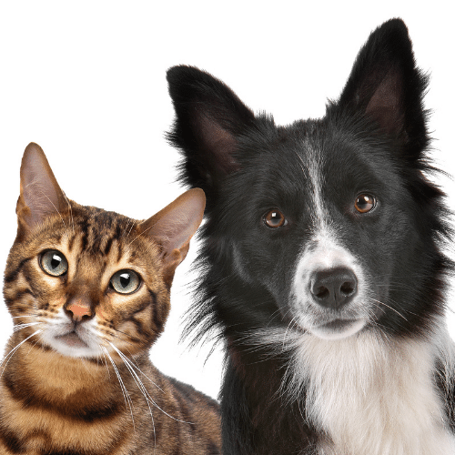

Hello! Welcome to the Adopt A Cat/Dog Website!
In this website, you can adopt a cat or a dog, learn about taking care of your newly adopted pet, or give your cat or dog up for adoption.
You can contact us to enquire about pets we have, or browse our page with pets waiting for you. You can also fill out our form to find the
perfect companion for you and your family! Once you have your new friend, you can check out our resources to learn more about taking care of it!
If you can no longer take care of your pet or if your pet has given birth to many puppies or kittens, you can fill out our form to put them
up for adoption! Contact us for more details on putting pets up for adoption.
